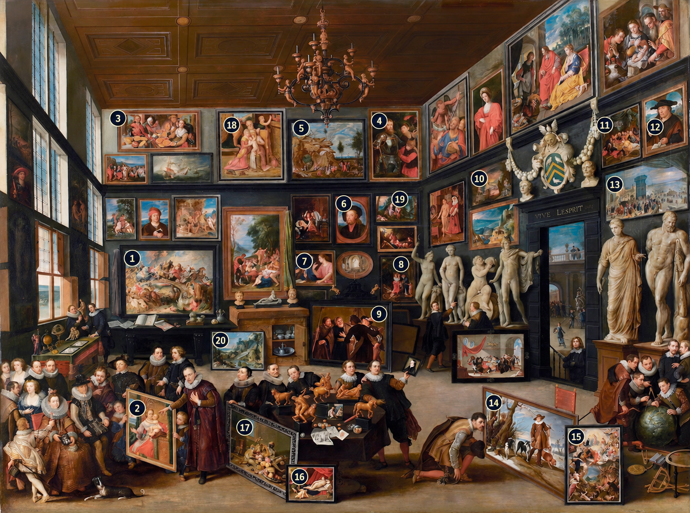

ANTWERP · 1628
Willem van Haecht, Artist
Opening the cabinet…
A ROOM OF WONDERS
Walk among paintings, sculpture, and objects of curiosity from an imagined seventeenth-century Antwerp interior.
Scroll to zoom · Drag to inspect
ART, NATURE & KNOWLEDGE
This room is an interpretive reconstruction of Willem van Haecht’s The Gallery of Cornelis van der Geest (1628). The original celebrates a collector and his circle; it is not a measured architectural record.

The twenty numbered works follow the supplied identification key. Standalone reproductions are used where available. Otherwise, an unnumbered detail is cropped directly from the full-resolution photograph of the original gallery painting. The labeled reference appears here only as a separate identification aid and is never used as artwork in the room. “Imagined” works are new, period-inspired compositions. Furniture, sculpture, and curiosities are interpretive models.
Move with WASD or the arrow keys. Drag to look, or enable Mouse look. Click a painting, or aim and press E. Escape releases the mouse or closes a detail. On touch screens, use the movement buttons and drag the room to look.
Rubenshuis museum account ↗ RKD catalogue ↗